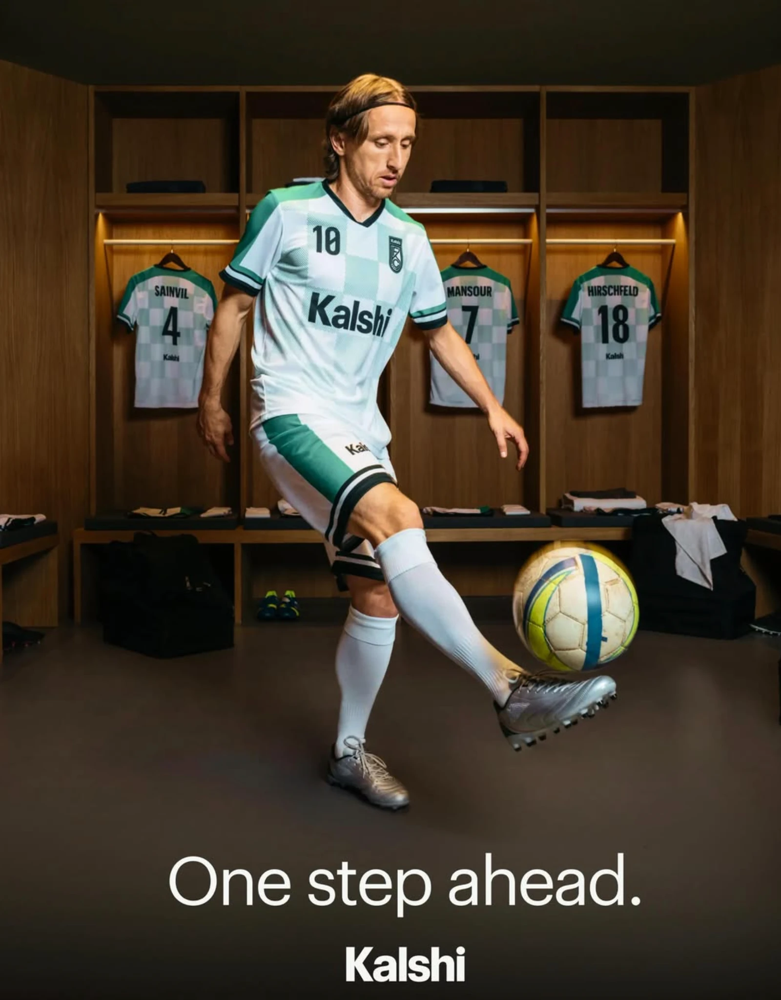

Celebrity campaign · 2026 FIFA World Cup
One step ahead: Luka Modrić for Kalshi
The campaign image for Kalshi’s international launch with the Croatia captain, released across television and social in June 2026.

A dressing room in warm oak. Four shirts on hangers, the light low and even, the floor swallowing everything that isn’t the player. Modrić has the ball at the height where control stops looking like effort, in the half-second before it drops. Everything else in this campaign moves. This frame has to hold all of it without moving at all.
That is the discipline of celebrity campaign photography, and of the sports portrait in particular: a subject the world already pictures, a set built to brand specification, and less time than the picture deserves. One frame has to carry a global brand onto a television end card, a phone screen and a feed, and survive all three.
The partnership
In June 2026 the prediction-market exchange Kalshi announced a partnership with the Croatian Football Federation and named Luka Modrić a global ambassador for the 2026 FIFA World Cup. The Ballon d’Or winner captains Croatia and plays for AC Milan. The creative platform was “One step ahead”. Alongside the campaign image, the launch carried a thirty-second commercial, Hands, built on one premise: Kalshi staff using their hands for Modrić, because a footballer cannot use his own. It has run on United States television since 17 June 2026, with a Spanish-language cut in parallel.
An international campaign
Kalshi’s tournament push ran through a roster that also included Timothée Chalamet, J Balvin and José Mourinho, built by a twenty-person in-house team reading its dashboards hourly. The brand added three million users across the tournament, and its spots ranked among the most engaging advertising of the 2026 World Cup.
Modrić posted the campaign image to his own account, where 38.7 million followers pushed it past 150,000 likes, under a three-word caption and a tag. Which is the entire brief for an international campaign photograph: it has to work with no caption at all.
The film

Credits
- Client
- Kalshi
- Talent
- Luka Modrić
- Campaign
- “One step ahead”, 2026 FIFA World Cup
- Photography
- Gabriele Compagni
- Year
- 2026
Gabriele Compagni is an Italian fashion and advertising photographer and video director working between Milan and New York, shooting celebrity campaigns, editorial portraits and commercial campaign photography for international brands. See more work.